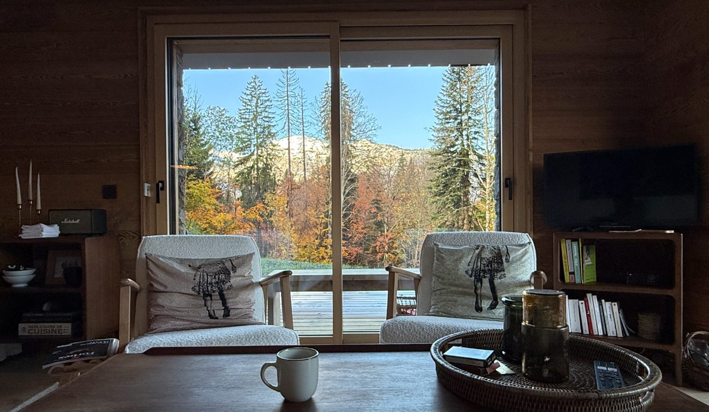
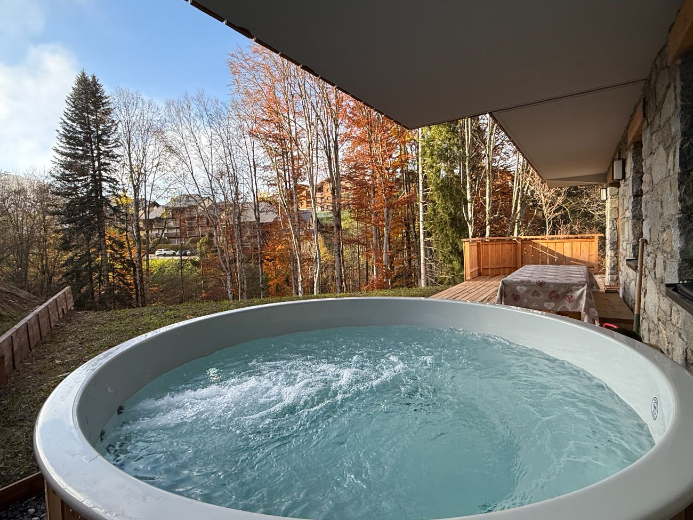

Autumn in Les Carroz: nature at its finest

As summer fades, Les Carroz d'Arâches slips into one of its most beautiful seasons. The larches turn to gold, the forests glow red and copper, the air grows crisp and clear, and the resort recovers its calm. For a nature getaway with the family, far from the crowds, autumn in the heart of the Grand Massif is a well-kept secret — and Lodge Le Chamois is the ideal base camp.
The deer rut, autumn's great spectacle
This is the season's unmissable event. From late September to early October, on the heights of the Vernant valley above Les Carroz, the deer rut echoes out — those powerful bellows rising from the forests at dusk, in an almost otherworldly atmosphere. On guided outings, you can typically observe around a hundred deer and fifty chamois; through binoculars, the dominant stags with their long antlers are easy to pick out. A powerful moment, to be experienced in silence and at a safe distance from the animals.
Gentle hikes through golden forests
Autumn is a perfect season to walk: pleasant temperatures, low golden light, quiet trails. From the resort, the Mont Favy loop winds through the forest while opening onto fine views of the surrounding peaks; other easy loops around Arâches and Les Carroz take one to two hours, ideal with children. Alpine lakes such as Lac de l'Airon take on magnificent reflections at this time of year. Bring shoes with good ankle support and a light layer: mornings are bracingly fresh.
Mushrooms, wildlife and mountain air
It's also peak mushroom season in the damp undergrowth (ceps, chanterelles) — to be foraged carefully and in line with local rules. As for wildlife, marmots busy before hibernation, chamois coming lower down, birds of prey overhead: the autumn mountain is surprisingly alive. And the panoramas, often clear after a cold night, are among the purest of the year.
Autumn at the Lodge's pace

After a day outdoors, the apartment comes into its own: the fully equipped kitchen for a slow-cooked tartiflette, the fire pit on the south-facing terrace for a sunset aperitif, and the wooden Nordic bath to unwind facing the mountains — all the more delicious as the air turns cool. It's also the season of gentler rates and true quiet. To plan your outings, take a look at our finest hikes and our complete guide to Les Carroz d'Arâches.
Fancy a stay at the Lodge?
4★ apartment for 6, south-facing terrace and Nordic bath, in the centre of Les Carroz d'Arâches.
Check availability